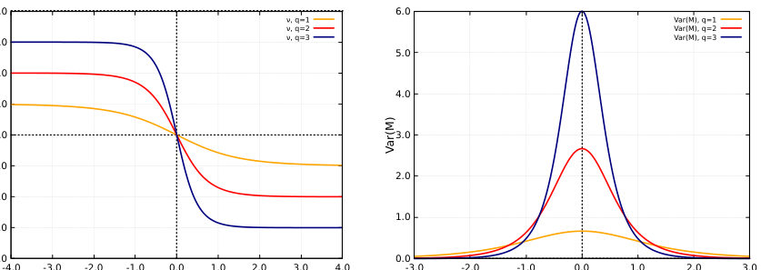

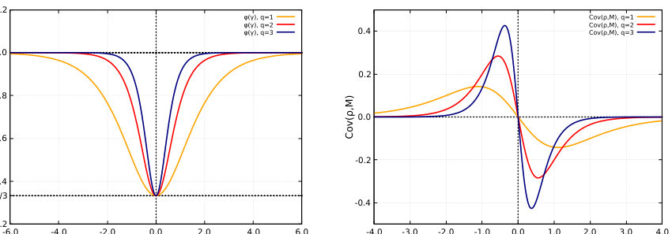
← Index · ← Previous · Next →
Authors: Ngo P. N. Ngoc, Tuan-Minh Nguyen
Type: theory · Category: statistical mechanics · PDF: https://arxiv.org/pdf/2605.17725v1
Analysis basis: full PDF text, analyzed in chunks
Topic relevance: correlated / nonlocal dissipation 2/5 · driven-dissipative phase transition 2/5 · non-equilibrium dynamics 2/5 · non-equilibrium universality 2/5
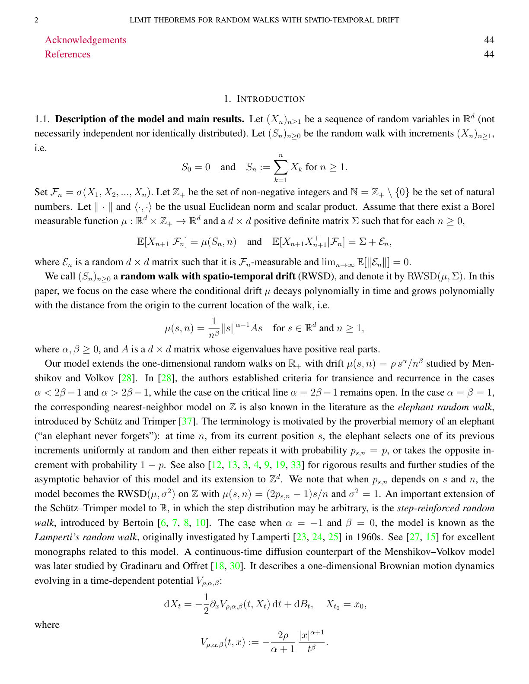
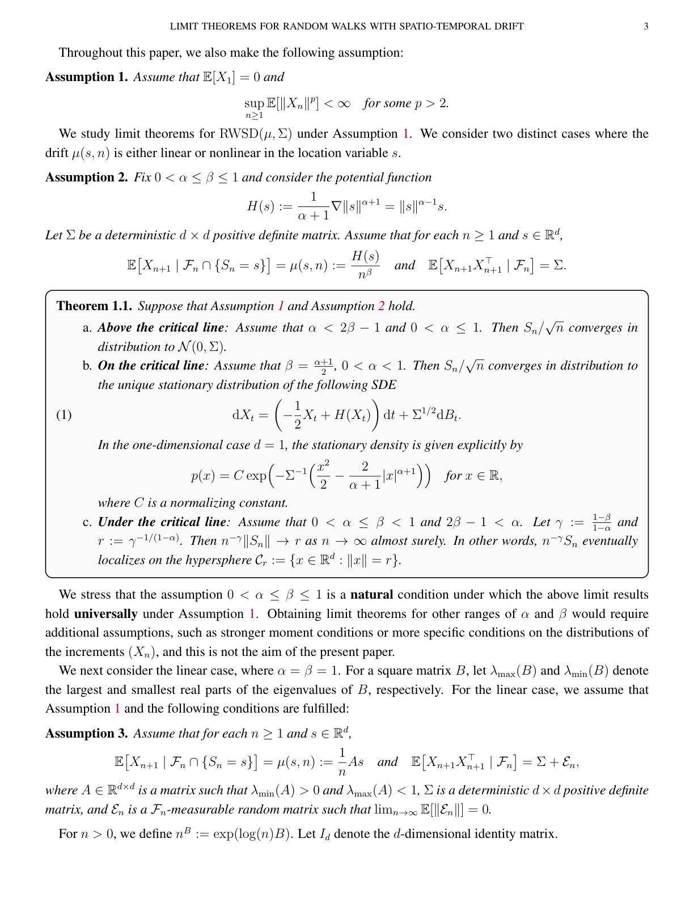
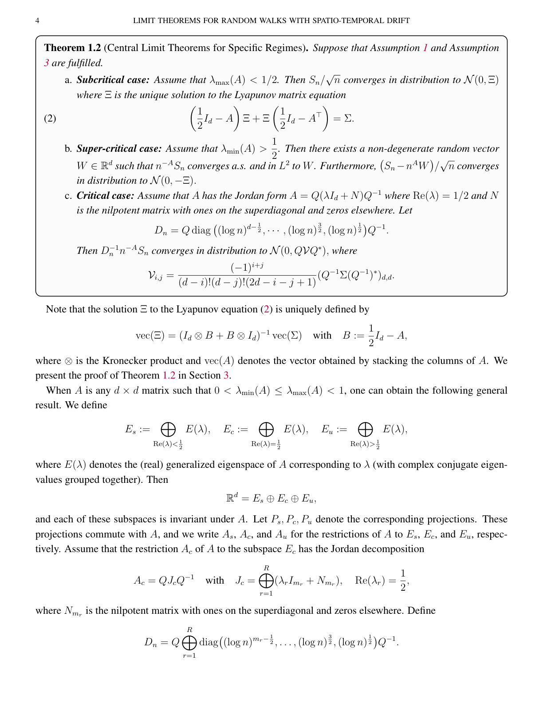
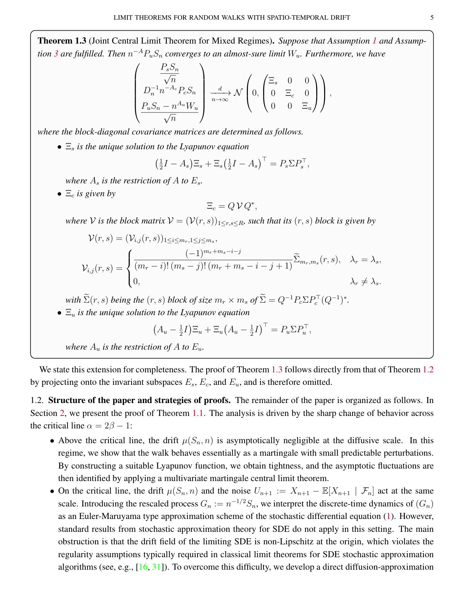
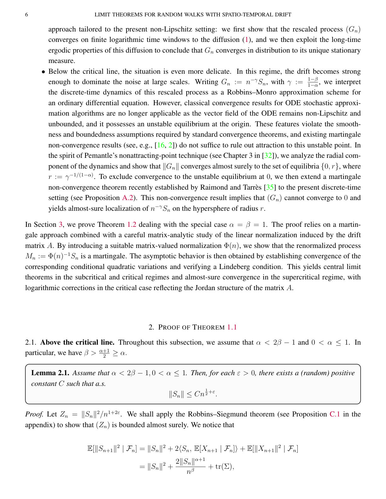
Summary. This paper provides a complete classification of the long-term behavior of random walks with complex, time-dependent, and position-dependent drifts. It identifies how varying the strength of the drift relative to noise leads to transitions between diffusive, SDE-driven, and localized states.
Why it may be interesting. The study of phase transitions and localization in stochastic processes with memory and spatio-temporal dependence is highly relevant to understanding non-equilibrium dynamics and many-body localization in open quantum systems.
Main problem. The paper investigates the asymptotic behavior and limit theorems for a class of discrete-time random walks in R^d characterized by spatio-temporal drift.
Main result. The authors establish a phase transition in the convergence of the normalized process, identifying three distinct regimes in the nonlinear case: Gaussian convergence, convergence to an SDE-based stationary distribution, and almost sure localization on a hypersphere.
Method. The study employs martingale theory, multivariate martingale central limit theorems, Lyapunov functions, and diffusion approximations to analyze the process.
Model / system. A discrete-time random walk in R^d where the conditional drift decays polynomially in time and grows polynomially with the distance from the origin, related to models like the Elephant Random Walk and self-interacting processes.
Key observables. The asymptotic distribution of the scaled position (normalized process), the scaling exponent gamma, and the asymptotic covariance matrix.
Important parameters / regimes. Spatial scaling exponent (alpha), temporal scaling exponent (beta), and the eigenvalues of the drift matrix (A).
Assumptions / limitations. Increments must have moments of order p > 2; the drift field may be non-Lipschitz at the origin; the covariance matrix Sigma is assumed to be positive definite.
Paper structure. The paper begins by defining the RWSD model and its regimes, followed by proofs for the nonlinear case (Theorem 1.1) and the linear case (Theorem 1.2/1.3), and concludes with an appendix on non-convergence and martingale CLT tools.
We study a class of discrete-time random walks in $\mathbb{R}^d$ whose conditional drift decays polynomially in time and grows polynomially with the distance from the origin to the current position. This class is related to several models of self-interacting random processes. We determine the asymptotic behavior of the walk under the assumption that its increments have moments of order $p$ for some $p>2$. In the linear case, where the drift depends linearly on the current position, we establish a phase transition in the convergence in distribution of the normalized process to Gaussian limits. In the nonlinear case, we identify three distinct regimes separated by a critical line and show that the normalized process exhibits qualitatively different behaviors in each regime, including convergence in distribution to a Gaussian law, convergence to a non-Gaussian limit given by the stationary distribution of a stochastic differential equation, and almost sure localization on a hypersphere.
Authors: Xiangjun Tan, Zhanning Wang
Type: theory · Category: quantum information and computing · PDF: https://arxiv.org/pdf/2605.17457v1
Analysis basis: full PDF text, analyzed in chunks
Topic relevance: correlated / nonlocal dissipation 2/5 · entanglement & information structure 2/5 · quantum measurements 2/5 · spintronics-quantum-optics interface 2/5
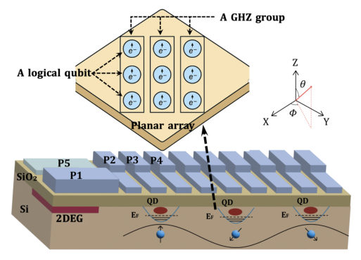
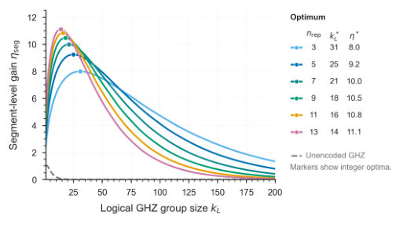
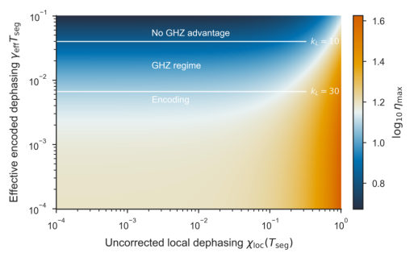
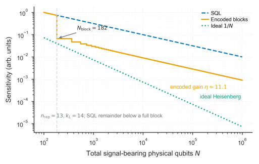
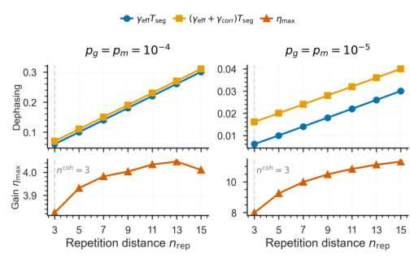
Summary. The paper proposes using quantum error correction to enhance the detection of axion dark matter using silicon spin qubit arrays. By using a repetition code to suppress local dephasing, the authors show that entanglement-enhanced sensing can be restored, significantly improving the sensitivity to axion-electron coupling.
Why it may be interesting. This paper is highly relevant to open quantum systems and quantum metrology, as it demonstrates how active error correction can be used to preserve quantum coherence for sensing tasks in the presence of non-Markovian and correlated noise.
Main problem. Searching for axion dark matter using semiconductor spin qubits is limited by strong longitudinal dephasing, which suppresses the sensitivity gains of entanglement.
Main result. Quantum error correction (QEC) using a repetition code can mitigate local dephasing, restoring entanglement-enhanced sensing and providing up to an order-of-magnitude improvement in sensitivity to axion-electron coupling.
Method. The authors derive closed-form expressions for Quantum Fisher Information by integrating an optimal repetition code with logical GHZ block entanglement and optimizing the logical block size.
Model / system. The system consists of CMOS-compatible silicon spin qubit arrays (quantum dots) interacting with a classical, spatially coherent axion field that acts as an effective oscillating pseudo-magnetic field.
Key observables. Axion-electron coupling (gae), Quantum Fisher Information (QFI), and spin polarization sidebands.
Important parameters / regimes. Axion mass (10^-6 to 10^-3 eV), dephasing rates (local and correlated), QEC cycle frequency, and the Standard Quantum Limit (SQL).
Assumptions / limitations. The axion field is treated as a classical, spatially coherent field with a wavelength much larger than the qubit array; the repetition code specifically targets local phase-flip errors.
Figures summary. Figure 1 shows a schematic of a planar silicon quantum dot array with gates and repetition code blocks; Figure 2 shows the sensitivity improvement gain as a function of logical size; Figure 3 illustrates QEC benefit regimes; Figure 5 shows the scaling of sensitivity with the total number of physical qubits.
Paper structure. The paper introduces the dark matter search problem, defines the spin-qubit-axion interaction Hamiltonian, implements a QEC-protected GHZ protocol, analyzes the resulting Fisher information and sensitivity gains, and concludes with a scaling analysis and projection onto realistic CMOS hardware parameters.
Searches for axion and axionlike dark matter based on solid-state spin qubits are fundamentally limited by strong longitudinal dephasing, which rapidly suppresses the sensitivity gains offered by entanglement. Here we show that quantum error correction (QEC) can substantially enhance axion search sensitivity in realistic semiconductor spin qubit platforms by mitigating this dominant noise source. By integrating an optimally chosen repetition code QEC with logical GHZ block entanglement, we derive closed-form expressions for the quantum Fisher information that explicitly incorporate the finite coherence time of the axion field. Our analysis demonstrates that modest QEC cycle frequencies are sufficient to significantly reduce the effective dephasing rate, thereby restoring a broad parameter regime in which entanglement-enhanced sensing surpasses the standard quantum limit. Projecting these results onto CMOS-compatible device parameters, we find that QEC-protected entangled sensing can revive otherwise inaccessible quantum advantages, yielding up to order-of-magnitude improvements in sensitivity to the axion-electron coupling $g_{ae}$. These results establish a practical and theoretically controlled pathway for using QEC to improve qubit array searches for physics beyond the Standard Model.
Authors: Borhan Ahmadi
Type: theory · Category: quantum information and computing · PDF: https://arxiv.org/pdf/2605.18108v1
Analysis basis: full PDF text, analyzed in chunks
Topic relevance: Tavis-Cummings & cavity-many-emitter 2/5 · methods for driven-dissipative 2/5 · non-equilibrium dynamics 2/5 · quantum measurements 2/5
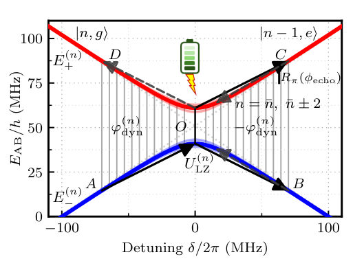
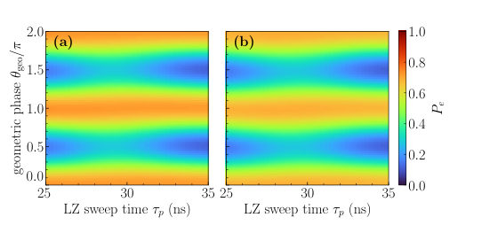
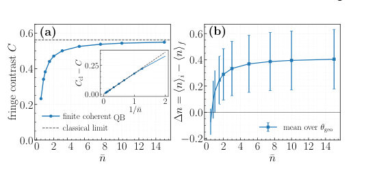
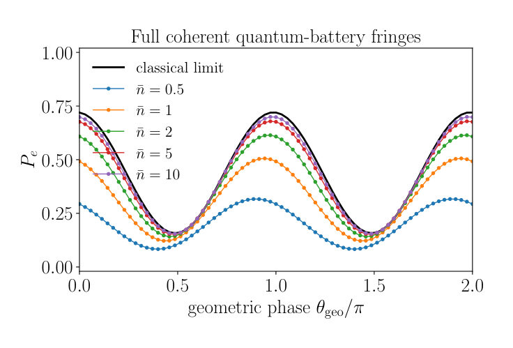
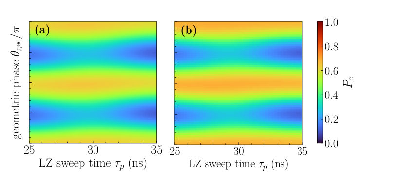
Summary. The paper examines the performance of a geometric Landau-Zener interferometer powered by a finite quantum battery instead of a classical drive. It demonstrates that maintaining a coherent phase reference is more critical for interference contrast than reducing photon-number fluctuations. Consequently, standard coherent states outperform squeezed states for high-fidelity geometric control.
Why it may be interesting. This paper is highly relevant to researchers in open quantum systems and quantum optics as it explores the fundamental limits of using non-classical energy reservoirs for coherent control and quantifies the trade-off between energy fluctuations and phase coherence.
Main problem. Investigating whether a finite quantum battery can replace classical phase-coherent microwave drives for superconducting qubit control and determining if energy alone or phase-coherent energy is the critical resource for geometric control.
Main result. The study finds that reducing photon-number fluctuations via squeezing is insufficient for improving interference contrast because the loss of the coherent phase-reference strength outweighs the benefits of reduced gap broadening; coherent states provide the optimal balance.
Method. Full density-matrix evolution using a Lindblad master equation and an adaptive eighth-order Runge-Kutta solver to account for qubit-battery dynamics and back-action.
Model / system. A two-level system (qubit) coupled to a single quantized bosonic mode (the quantum battery) via a Jaynes-Cummings Hamiltonian, undergoing a Landau-Zener-Stueckelberg interferometry protocol with an echo pulse.
Key observables. Final excited-state population (interferogram contrast), fringe contrast (C), photon-number change (battery back-action), and the coherent phase-reference fraction (eta_coh).
Important parameters / regimes. Mean photon number (n_bar), photon-number variance, coupling strength (g), and the coherent fraction (eta_coh); regimes include the macroscopic coherent-state limit and the few-quanta quantum regime.
Assumptions / limitations. The echo pulse is treated as a qubit-only operation that does not act on the battery; the rotating-wave approximation is applied.
Figures summary. Figure 1 shows a schematic of photon-number-resolved Landau-Zener passages and dressed adiabatic branches; Figure 3 compares performance across different battery states.
Paper structure. The paper introduces the problem of replacing classical drives with quantum batteries, defines the Jaynes-Cummings model and the GLZI protocol, analyzes the impact of photon-number fluctuations and gap broadening, compares various battery states (coherent vs. squeezed), and concludes with the necessity of a phase reference.
Classical microwave drives are usually treated as ideal phase-coherent work sources for superconducting-qubit control. What if such a drive is replaced by a finite quantum battery. As a demanding benchmark, we consider echo-refocused geometric Landau--Zener interferometry powered by a single quantized bosonic mode. The qubit--battery dynamics are described by a Jaynes--Cummings Hamiltonian, while the echo pulse is retained as a qubit-only refocusing operation that cancels the dynamical phase. In the macroscopic coherent-state limit, the usual classical geometric interferometer is recovered. At finite mean photon number, however, the Jaynes--Cummings coupling generates photon-number-resolved avoided crossings with gaps $Ω_n=2g\sqrt{n}$. The qubit-only echo redistributes amplitudes between neighboring excitation sectors, so the finite-battery protocol is not a single classical interferometer but a coherent sector-resolved quantum evolution. This produces contrast loss, interferogram distortions, and measurable battery back-action. We further show that reducing photon-number fluctuations alone is not sufficient: geometric control requires a first-order phase reference. Geometric Landau--Zener interferometry therefore provides a practical benchmark for certifying phase-coherent quantum-battery energy.
Authors: I. B. Spielman amd J. P. Zwolak
Type: both · Category: quantum gases · PDF: https://arxiv.org/pdf/2605.18689v1
Analysis basis: full PDF text, analyzed in chunks
Topic relevance: QC/QI experiment 2/5 · analog quantum simulation 2/5 · quantum measurements 2/5
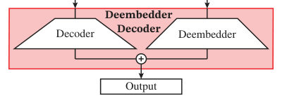
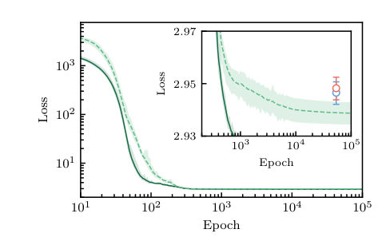
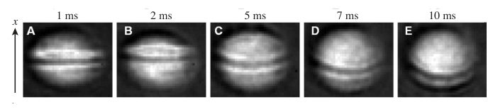
Summary. This paper investigates whether machine learning for cold-atom experiments can be both accurate and explainable. By comparing CNNs to Explainable Boosting Machines, the authors show that physics-informed, interpretable models can effectively classify quantum gas excitations like solitons and vortices.
Why it may be interesting. It addresses a critical bottleneck in many-body dynamics experiments: how to use powerful ML tools to extract physical signals from noisy, high-volume data without losing the ability to verify the underlying physics.
Main problem. The challenge of applying machine learning to quantum-gas experiments while balancing high performance with scientific interpretability and avoiding the 'black-box' memorization of imaging artifacts.
Main result. The authors demonstrate that Explainable Boosting Machines (EBMs) can match or surpass CNN performance in classifying excitations like solitons and vortices, providing human-readable, physics-aligned explanations.
Method. The study compares traditional linear algebra, CNNs (U-Nets, ResNet), and Explainable Boosting Machines (EBMs) applied to image denoising and feature classification.
Model / system. The physical platform consists of neutral-atom quantum simulators, specifically Bose-Einstein Condensates (BECs), using bright-field imaging (absorption or phase-contrast) to detect solitons and vortices.
Key observables. Atomic density (optical depth), soliton position, velocity, depth, and width, and vortex vorticity.
Important parameters / regimes. Probe wavelength, resonant absorption cross-section, and photon shot noise levels.
Assumptions / limitations. The signal of interest is assumed to be concentrated within a specific interior region of the imaging window.
Figures summary. Figure 1 shows the imaging system and comparison of reconstruction methods; Figure 2 illustrates PCA eigenvalue spectra and templates; Figure 4 shows the ResNet architecture; Figure 10/11 display excitation classes and EBM feature importance/shape functions.
Paper structure. The paper introduces the imaging challenges, compares linear algebra vs. ML for reference reconstruction, evaluates CNNs vs. EBMs for excitation classification, and concludes on the feasibility of explainable scientific ML.
Virtually all aspects of many-body atomic physics are challenging: experiments are technically demanding, datasets have become enormous, and the memory and CPU requirements for classical simulation of generic quantum systems often scale exponentially with system size. Machine learning (ML) methods are already assisting in each of these areas and are poised to become transformative. Here, we focus on two specific applications of ML to cold-atom-based quantum simulators. These devices generally generate data in the form of images; we first showcase denoising of raw images and then identify solitonic waves in Bose-Einstein condensates. In both of these examples, we comment on the interplay between performance, model complexity, and interpretability.
Authors: Hami Mehrabi, Ludovico Lami, Mark M. Wilde
Type: theory · Category: quantum information and computing · PDF: https://arxiv.org/pdf/2605.16782v1
Analysis basis: full PDF text, analyzed in chunks
Topic relevance: entanglement & information structure 2/5 · methods for driven-dissipative 2/5 · quantum measurements 2/5
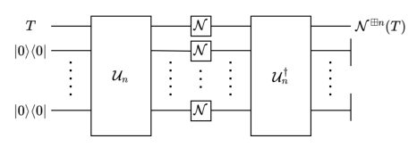
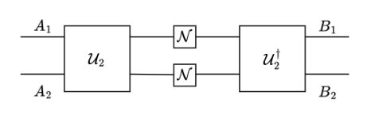
Summary. This paper develops a Central Limit Theorem for bosonic quantum channels, showing that repeated symmetric convolutions of a channel converge to a Gaussian channel. This result unifies classical and quantum limit theorems and allows for the derivation of new uncertainty relations and tight lower bounds on the quantum capacity of linear bosonic channels.
Why it may be interesting. This is highly relevant for researchers in quantum optics and open quantum systems as it establishes Gaussian channels as the fundamental limit of repeated channel applications and provides new tools for bounding the capacity of continuous-variable quantum communication.
Main problem. The paper aims to extend the Central Limit Theorem (CLT) from classical probability and quantum states to the setting of bosonic quantum channels, establishing Gaussian channels as extremal objects.
Main result. The authors prove that the n-fold symmetric convolution of a bosonic channel converges to a Gaussian bosonic channel, providing a unified framework that recovers both the classical CLT and the CLT for bosonic states.
Method. The study uses the Heisenberg picture, Weyl representation, and n-beam splitter unitaries to define a symmetric convolution of channels, analyzing convergence via the pointwise convergence of characteristic functions.
Model / system. The system consists of single-mode and multi-mode bosonic quantum systems (continuous-variable systems) described by quadrature operators and canonical commutation relations, specifically focusing on linear bosonic channels.
Key observables. First-order moments (displacement), second-order moments (covariance matrix), characteristic functions, and energy-constrained quantum capacity.
Important parameters / regimes. The n-fold convolution limit (n to infinity), energy-constrained regime (E >= 0), and the scaling function of the channel.
Assumptions / limitations. The results assume finite second-order moments for the channel, finite first-order moments, and specifically rely on the linearity of the channel for the capacity lower bound.
Figures summary. Figure 1 provides a schematic diagram illustrating the construction of the symmetric convolution of a channel using an n-beam splitter unitary.
Paper structure. The paper introduces the problem of extending the CLT to channels, defines the symmetric convolution mechanism, proves the convergence to Gaussian channels (the qCLT for channels), demonstrates the recovery of classical and state-based CLTs, and applies the result to derive uncertainty relations and capacity lower bounds.
In this paper, we develop an extension of the Central Limit Theorem (CLT) to the setting of bosonic quantum channels. This extension provides a deeper understanding of Gaussian bosonic channels as extremal objects. Using our CLT for bosonic quantum channels, we recover both the classical CLT and the CLT for bosonic quantum states, thereby offering a unified perspective that connects classical probability theory with continuous-variable quantum systems. Moreover, using our result, we can provide necessary uncertainty relations that every physical (possibly non-Gaussian) bosonic quantum channel must satisfy. As another application of our limit theorems, we derive tight lower bounds on the energy-constrained quantum capacity of linear bosonic channels by relating it to the capacity of their associated Gaussian bosonic channels, further reinforcing the role of Gaussian channels as extremal.
Authors: Boris Maulén, Roberto C. Bochicchio
Type: theory · Category: statistical mechanics · PDF: https://arxiv.org/pdf/2605.17713v1
Analysis basis: full PDF text, analyzed in chunks
Topic relevance: entanglement & information structure 2/5 · methods for driven-dissipative 2/5 · non-equilibrium dynamics 2/5


Summary. This paper develops a theoretical framework using the Quantum Expectation Identity to describe the electronic properties of a molecular domain. It establishes a direct link between the change in quantum purity and the statistical covariance of the particle number. The results provide analytical tools to study how open quantum systems respond to changes in their chemical environment.
Why it may be interesting. It provides a rigorous statistical mechanical framework for understanding how fluctuations and correlations in open quantum systems (like molecular domains) relate to fundamental properties like purity and chemical potential.
Main problem. Establishing analytical relationships between quantum observables, such as electronic population and chemical potential, and their derivatives within a molecular domain treated as an open quantum system.
Main result. The derivation of the Quantum Expectation Identity (QEI) applied to a three-state model, specifically finding that the derivative of quantum purity with respect to chemical potential is proportional to the negative covariance between the density matrix and the number operator.
Method. The study utilizes the Quantum Expectation Identity (QII) theorem and a Jaynesian inferential approach (maximizing von Neumann entropy) under constraints of particle number fluctuation.
Model / system. A three-state model of a molecular domain (or basin) treated as an open quantum system. The density matrix is expanded using a neutral state, a cationic state, and an anionic state, using a canonical-like ensemble where the number operator replaces the Hamiltonian.
Key observables. Electronic population, chemical potential, maximum charge capacity (q), quantum purity, and particle number variance.
Important parameters / regimes. Chemical potential (gamma), fractional charge (nu), and charge capacity (q); regimes include the pure state limit (gamma to infinity) and maximum disorder (gamma = 0).
Assumptions / limitations. The temperature effects are excluded; the test operator must be compatible with the density matrix; the density matrix must be non-singular.
Figures summary. Figure 1a shows the transferred charge fraction as a function of chemical potential for various q values; Figure 2a shows quantum purity transitioning from 1/3 to 1; Figure 2b shows the covariance between the density matrix and particle number.
Paper structure. The paper begins by defining the three-state model and the QEI theorem, progresses to deriving analytical expressions for particle number and variance, explores the dynamics of quantum purity and its correlation with the number operator, and concludes with an analysis of specific physical regimes.
The electronic distribution of a molecular domain is examined in this study. A theoretical formulation of quantum molecular properties is presented using the Quantum Expectation Identity theorem (QEI), with a focus on the three-state model of the density matrix for the quantum state of a molecular domain as an open system. The report examines the relationship between ab initio statistical fluctuation-correlation theorems for quantum observables and their derivatives. We focus on three main quantities of a domain: the electronic population, its chemical potential, and its maximum capacity for accepting or donating charge with the neighbors. The analytical expressions for the quantities are presented and discussed in detail. At the end, we explore the concept of quantum purity and its proper application in the molecular domain.
Authors: Janka Memmen, Julia Kunzelmann, Nathan Walk, Jens Eisert, Julius Wallnöfer
Type: theory · Category: quantum information and computing · PDF: https://arxiv.org/pdf/2605.18677v1
Analysis basis: full PDF text, analyzed in chunks
Topic relevance: correlated / nonlocal dissipation 2/5 · entanglement & information structure 2/5 · methods for driven-dissipative 2/5
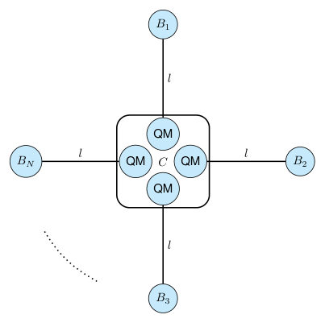
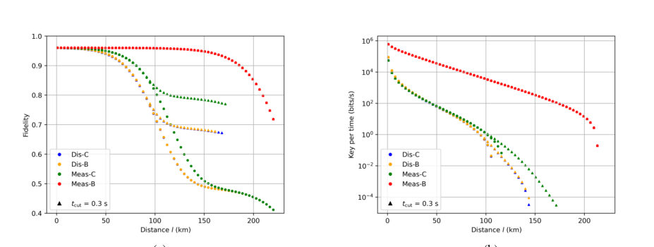
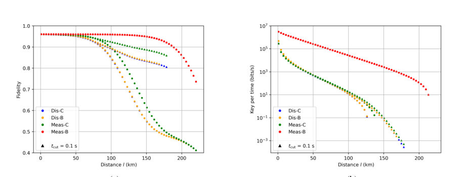
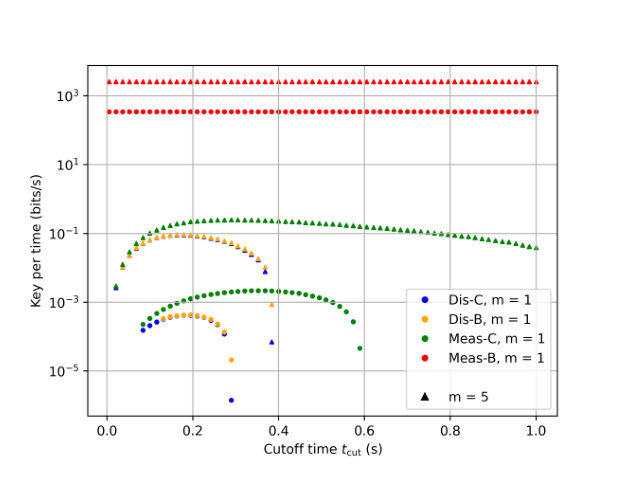
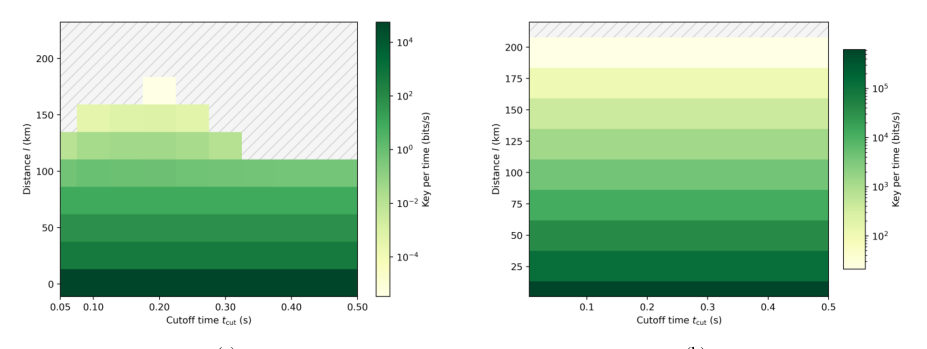
Summary. This paper investigates how to optimize quantum conference key agreement in asymmetric star networks by using cutoff times to discard decohered qubits. The authors demonstrate that such strategies, along with memory multiplexing, can significantly extend the achievable distance and improve the security of multipartite entanglement distribution.
Why it may be interesting. The study addresses the management of decoherence in multi-node quantum networks, which is highly relevant to the development of scalable quantum communication architectures and open quantum system dynamics in networked environments.
Main problem. Optimizing strategies for Quantum Conference Key Agreement (CKA) in asymmetric star networks to mitigate the impact of memory dephasing and decoherence.
Main result. Implementing 'cutoff time' strategies (discarding qubits after a certain duration) significantly enhances state fidelity and can enable secure key generation in regimes where standard protocols fail.
Method. Numerical Monte Carlo simulations using the NetSquid and ReQuSim frameworks to evaluate key rates and fidelity across various network configurations.
Model / system. A star-shaped quantum network consisting of a central station and multiple clients, utilizing GHZ state distribution, quantum memories with dephasing noise, and asymmetric link distances.
Key observables. Secure key rate (K_CKA), Quantum Bit Error Rate (QBER), and GHZ state fidelity.
Important parameters / regimes. Number of parties (N), number of memories (m), cutoff time (t_cut), memory dephasing time (T_dp), and link distance (l).
Assumptions / limitations. Dephasing noise is biased towards one basis; dark count rate and initial fidelity are fixed; the university network scenario is fictitious.
Figures summary. Figures show the improvement in fidelity and relative advantage in key rates using cutoff times as a function of dephasing time and distance, as well as the advantage of multipartite vs. bipartite protocols.
Paper structure. The paper introduces the CKA problem in star networks, describes the physical model and noise parameters, presents numerical simulation results for symmetric and asymmetric scenarios, evaluates the impact of memory multiplexing and cutoff times, and compares multipartite vs. bipartite advantages.
The distribution of entangled states is a core task for quantum networks facilitating quantum communication, and the use of multipartite entangled states comes with its own set of considerations. In this work, we analyze a quantum conference agreement protocol based on GHZ states in a network with a central station to which multiple clients are connected. Using comprehensive numerical simulations, we investigate how minor variations in the scenario-such as the number of parties, the number of memories, and asymmetric distances from the central station-can drastically influence the performance of the protocol. In particular, we demonstrate that it is crucial to adjust the strategy by optimizing cutoff times. From a broader perspective, we argue that numerical simulations are an indispensable tool for protocol design for devising realistic schemes for quantum communication.
Authors: Ara Sedrakyan
Type: theory · Category: strongly correlated electrons · PDF: https://arxiv.org/pdf/2605.17632v1
Analysis basis: full PDF text, analyzed in chunks
Topic relevance: Keldysh / 2PI / non-Gaussian methods 2/5 · non-equilibrium dynamics 2/5
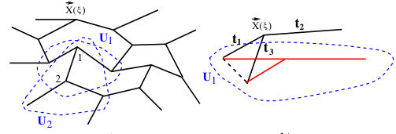
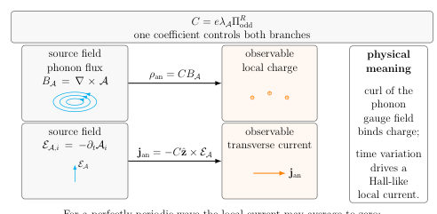
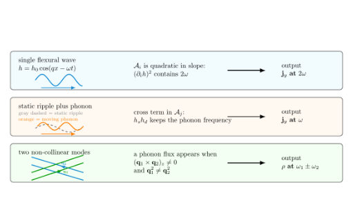
Summary. This paper demonstrates that mechanical deformations in graphene can generate transverse electrical currents through a parity-odd anomaly. It provides specific experimental signatures, such as frequency-doubled signals and gate-dependent decay, which allow for the direct detection of emergent gauge fields in deformed 2D materials.
Why it may be interesting. not directly relevant
Main problem. Investigating the electromechanical response of Dirac fermions in deformed graphene induced by a finite-frequency anomaly and identifying experimental signatures to distinguish this from ordinary deformation-potential backgrounds.
Main result. The paper derives a mixed Chern-Simons relation where mechanical deformations generate a transverse electric current, predicting specific frequency harmonics (2w) and gate-voltage dependencies (1/|mu| decay) as clean experimental fingerprints.
Method. The author uses a continuum Dirac theory framework, evaluating the one-loop parity-odd current-current correlator and performing spin and valley summation to determine the observable charge response.
Model / system. The system consists of deformed, sublattice-asymmetric graphene (e.g., on hBN) modeled by low-energy Dirac fermions on a curved manifold with an emergent phonon gauge field.
Key observables. Transverse electric current, second-harmonic current (2w), charge modulation, and the effective phonon gauge field flux.
Important parameters / regimes. Dirac mass (m), chemical potential (mu), deformation gauge coupling (lambda_A), and frequency (omega).
Assumptions / limitations. The analysis assumes the weak-deformation limit, the continuum limit of the tight-binding model, and the one-loop approximation for the fermion-phonon interaction.
Figures summary. Fig 1 illustrates local geometry and geometric gauge fields; Fig 2 shows the Feynman diagram for the anomaly-induced signal and compares it to other vertices.
Paper structure. The paper introduces the geometric origin of the phonon gauge field, derives the mixed Chern-Simons response via one-loop calculations, analyzes the response in different doping regimes, and concludes with specific experimental selection rules and symmetry-based detection protocols.
A deformation of a graphene sheet changes more than the positions of the atoms. In the low-energy Dirac theory it also produces geometric electron-phonon vertices. One of these vertices acts as an emergent phonon gauge field, $\calA_μ$, which couples to the same Dirac current as the electromagnetic vector potential. This shared current vertex gives a direct route from mechanics to electronics: a moving deformation can generate a transverse electric current, and a deformation pattern with emergent phonon flux can bind electric charge. We show that the coefficient of this mixed electromechanical response is the parity-odd current-current correlator of a massive Dirac cone. For an insulating cone the coefficient is the one-cone Chern-Simons value, while for a doped cone in the local regime it is reduced by the Berry curvature factor $m/|μ|$. We apply the response to explicit deformations. A traveling flexural wave generates a transverse second-harmonic current; a static ripple mixed with a dynamic phonon generates a transverse current at the drive frequency; and two non-collinear modes can generate charge modulation through the emergent phonon flux. We keep the spin and valley sum explicit, so the paper shows when the one-cone anomaly becomes a charge current in graphene and when it instead appears in a valley, spin, or spin-valley channel. For sublattice-gapped graphene with a valley-odd deformation gauge coupling, the two valleys add rather than cancel. The experimentally sharp signature is a transverse electrical signal at twice the flexural-wave frequency, with a phase fixed by the sign of the sublattice gap and a gate dependence that crosses over from a gap plateau to a $1/|μ|$ decay. These direction, phase, frequency, and gate-voltage selection rules give clean tests of the anomaly-induced electromechanical channel in deformed graphene.
Authors: Noel Cuadra, Thomas Gasenzer, Davide Proment, Alberto Villois
Type: theory · Category: quantum gases · PDF: https://arxiv.org/pdf/2605.18297v1
Analysis basis: full PDF text, analyzed in chunks
Topic relevance: analog quantum simulation 2/5 · non-equilibrium dynamics 2/5
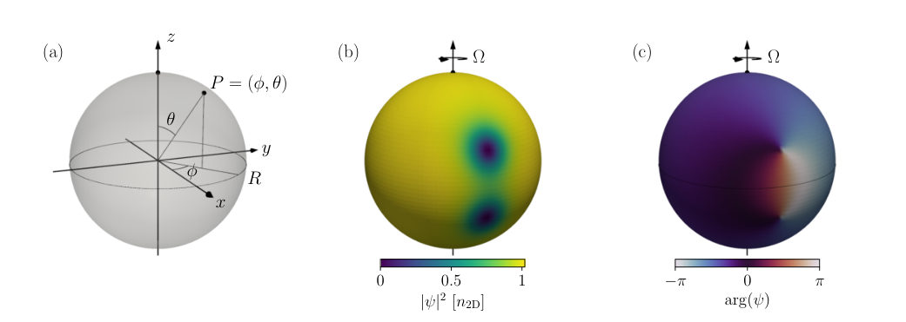
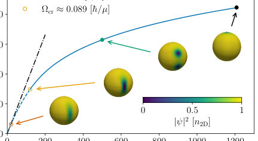
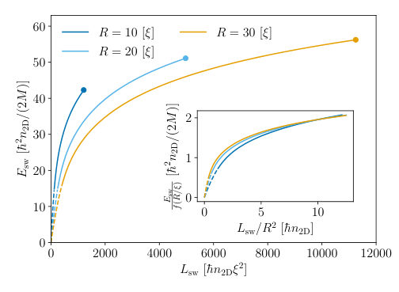
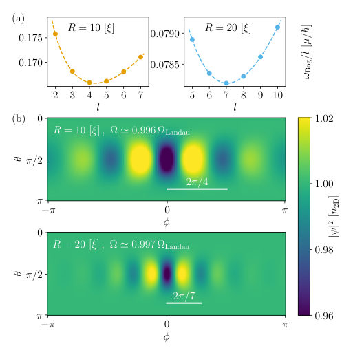
Summary. This paper explores how the curvature and topology of a spherical surface influence the formation and stability of solitary waves in a Bose-Einstein condensate. It demonstrates that these waves evolve from vortex dipoles to vortex-free solitons as rotation speed increases, with a maximum speed dictated by the Landau critical velocity. The findings provide a bridge between classical Jones-Roberts solitons in flat planes and excitations in curved, topologically non-trivial geometries.
Why it may be interesting. This work is highly relevant for many-body dynamics and AMO physics as it explores how topological constraints and curved geometries modify fundamental nonlinear phenomena like solitons and the Landau criterion for superfluidity.
Main problem. The study investigates the nonlinear excitations (solitary waves) that drive the onset of rotation in a Bose-Einstein condensate confined to a thin spherical shell, specifically how curvature and topology affect these waves.
Main result. The authors identify a continuous family of excitations ranging from vortex dipoles to vortex-free Jones-Roberts solitons, and determine that the Landau critical velocity sets the upper limit for the angular speed of these waves.
Method. The study uses the mean-field Gross-Pitaevskii equation solved via an iterative Newton-Raphson scheme with pseudo-spectral accuracy and branch-following continuation.
Model / system. A dilute, quasi-two-dimensional Bose-Einstein condensate (BEC) confined to a thin spherical shell of radius R, modeled by the Gross-Pitaevskii equation on a spherical surface.
Key observables. Density profile, phase angle, angular momentum (Lz), energy (E), and Bogoliubov excitation spectrum.
Important parameters / regimes. Sphere radius (R) in units of healing length, angular speed (Omega), chemical potential (mu), and the large-radius (Euclidean) limit.
Assumptions / limitations. The system is assumed to be a dilute gas in the mean-field regime, confined to a thin shell with strong radial confinement, and the ground state density is assumed to be uniform.
Figures summary. Figure 1 provides a schematic of the BEC on a spherical shell and visual representations of the density and phase angle for a specific vortex dipole configuration.
Paper structure. The paper introduces the physical system and GP model, describes the numerical Newton-Raphson and continuation methods, analyzes the different regimes of solitary waves (vortex dipoles to solitons), derives the energy-momentum relation, and establishes the stability condition via the Landau critical velocity.
The nonlinear excitations underlying the onset of rotation in a dilute Bose-Einstein condensate confined to a thin spherical shell are studied. These excitations correspond to solitary waves rotating about the sphere at constant angular speed: at low speeds they appear as dipoles of singly quantized vortices with opposite circulation, while at higher speeds they evolve into vortex-free Jones-Roberts solitons. With further increase of the angular speed, these excitations hybridize with equatorially confined modes whose azimuthal wave number is set by the sphere radius measured in units of the healing length. The propagation speed of these modes is shown to play the role of a Landau critical velocity, thereby setting the upper limiting angular speed of the entire Jones-Roberts family.
Authors: Yury A. Budkov
Type: theory · Category: disordered systems and neural networks · PDF: https://arxiv.org/pdf/2605.18187v1
Analysis basis: full PDF text, analyzed in chunks
Topic relevance: Keldysh / 2PI / non-Gaussian methods 2/5 · Kondo & dissipative impurity 2/5
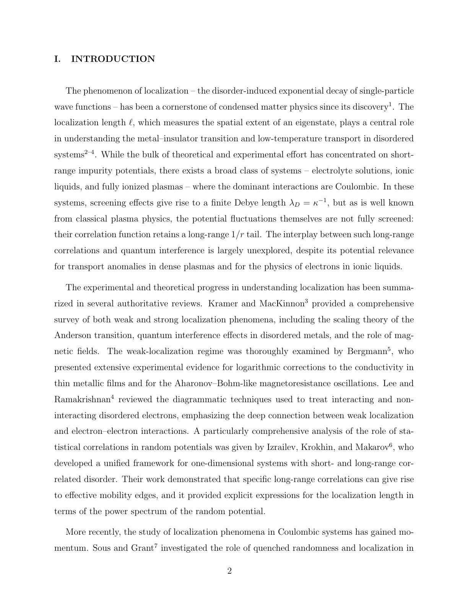
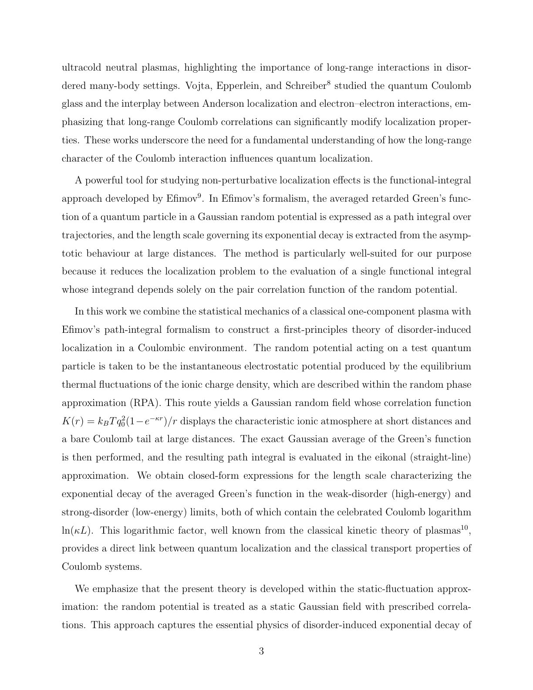
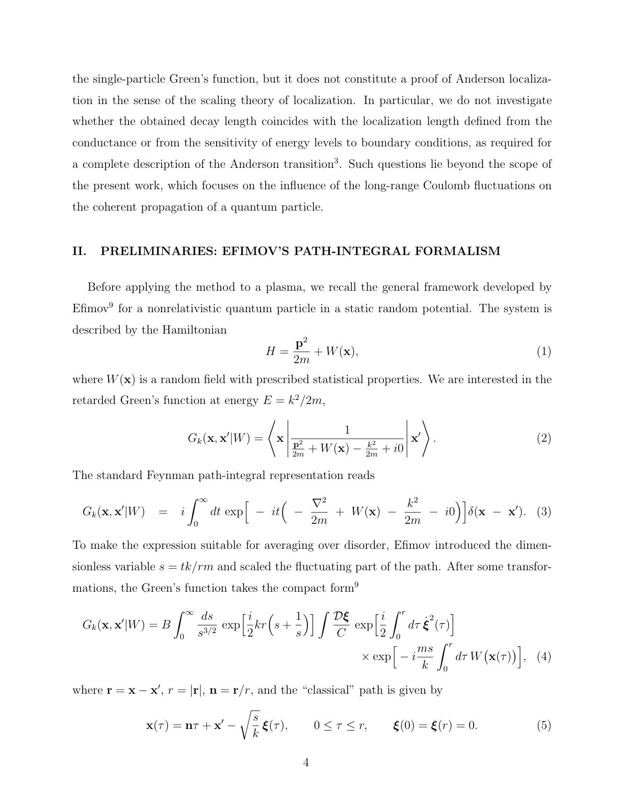
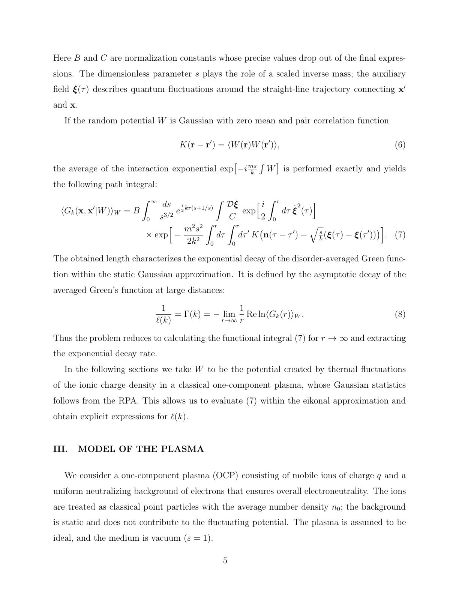
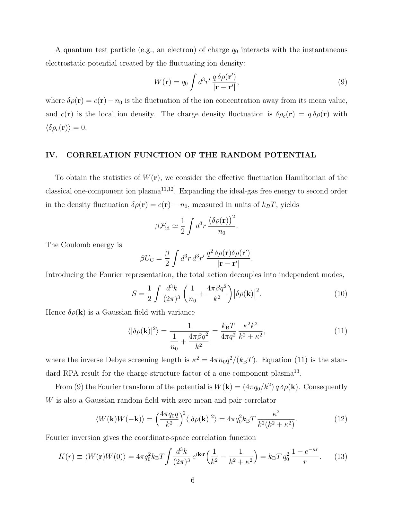
Summary. This paper provides a first-principles theoretical framework for understanding how quantum particles undergo localization due to the long-range Coulombic fluctuations in a classical plasma. It successfully links quantum interference effects to classical plasma kinetic theory via the Coulomb logarithm. The results are particularly relevant for understanding transport in dense astrophysical environments like the solar corona.
Why it may be interesting. not directly relevant
Main problem. The paper investigates the localization of a quantum particle moving through a random potential generated by thermal density fluctuations in a classical one-component plasma.
Main result. The author derives closed-form expressions for the localization length in both weak and strong disorder regimes, showing that the length scale explicitly depends on the classical Coulomb logarithm.
Method. The study employs Efimov's path-integral formalism, the Random Phase Approximation (RPA) for density fluctuations, and the Eikonal (straight-line) approximation to evaluate the averaged Green's function.
Model / system. A quantum test particle with charge q0 moving in a fully ionized classical one-component plasma (OCP) consisting of mobile ions and a static neutralizing background.
Key observables. Localization length l(k) and the potential correlation function K(r).
Important parameters / regimes. Debye screening length (kappa inverse), Coulomb logarithm (ln(kappaL)), momentum (k), and temperature (T).
Assumptions / limitations. The theory uses a static-fluctuation approximation (ignoring dynamic screening) and treats the random potential as a Gaussian random field.
Paper structure. The paper introduces the problem of disorder-induced localization in plasmas, develops the microscopic theory using path integrals and RPA, derives scaling laws for high-energy and low-energy regimes, and discusses the implications for astrophysical plasmas and the limitations of the static approximation.
We develop a microscopic theory of disorder-induced localization for a quantum particle moving in a fully ionized classical one-component plasma, within the static-fluctuation approximation. The random potential acting on the particle originates from equilibrium thermal fluctuations of the ionic charge density, described within the random phase approximation (RPA). The resulting potential correlation function exhibits an unscreened $1/r$ tail at large distances, leading to a logarithmic divergence of the integrated disorder strength. Using the Feynman path-integral representation of the retarded Green's function and performing the Gaussian average over the fluctuations exactly, we obtain closed-form expressions for the length scale $\ell(k)$ that characterizes the exponential decay of the disorder-averaged Green's function, with Planck's constant fully restored. In the weak-disorder (high-energy) regime, $\ell(k) = \hbar^4 k^2 / [m^2 k_B T q_0^2 \ln(κL)]$; in the strong-disorder (low-energy) limit, $\ell = \frac{4\sqrt[3]{2}}{3} \big( \hbar^4 / [m^2 k_B T q_0^2 \ln(κL)] \big)^{1/3}$. Both limits contain the Coulomb logarithm $\ln(κL)$, providing a direct link between quantum localization and classical plasma kinetic theory. We also discuss the limitations of the static-disorder approximation and the role of dynamic screening in real plasmas.
Authors: William M. Kantor
Type: theory · Category: quantum information and computing · PDF: https://arxiv.org/pdf/2605.17594v1
Analysis basis: full PDF text, analyzed in chunks
Topic relevance: entanglement & information structure 2/5 · quantum measurements 2/5
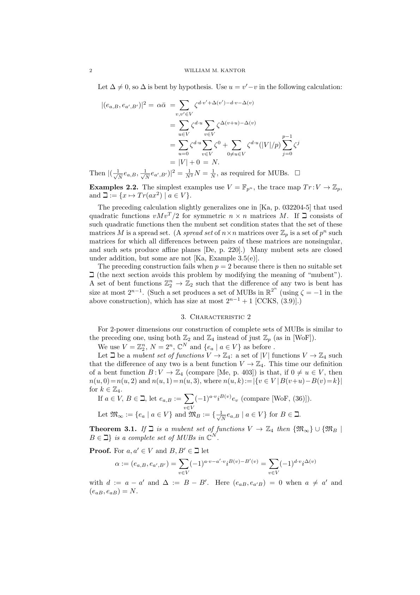
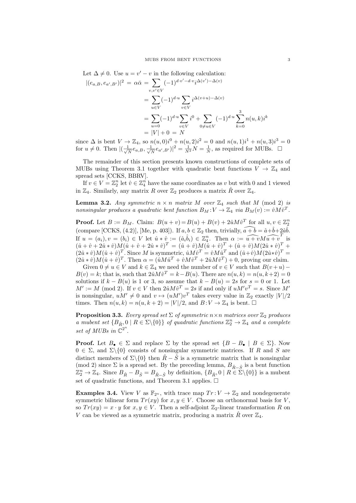
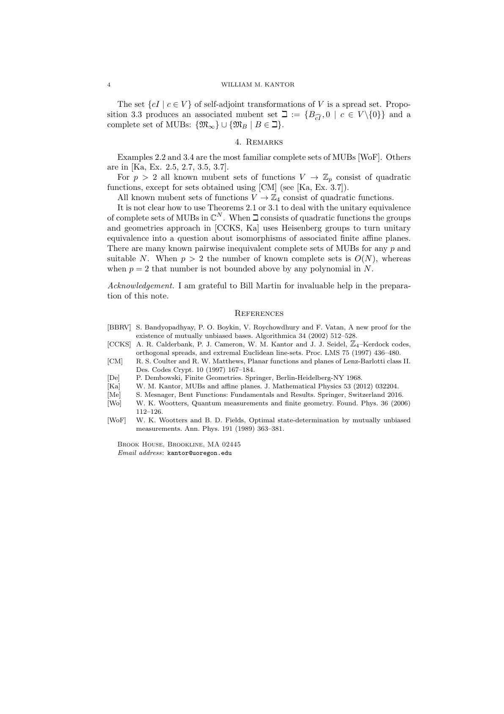
Summary. This paper presents a simplified method for constructing complete sets of Mutually Unbiased Bases in prime power dimensions. By using bent functions, the author provides explicit formulas for the new basis vectors as linear combinations of the standard basis. This approach unifies and generalizes previous constructions for both odd and even prime power dimensions.
Why it may be interesting. MUBs are fundamental to quantum state tomography and quantum key distribution; providing explicit, simple constructions is highly relevant for designing quantum protocols and understanding the geometry of quantum information.
Main problem. The construction of complete sets of Mutually Unbiased Bases (MUBs) in N-dimensional complex Hilbert spaces, specifically for prime power dimensions N = p^n.
Main result. The paper provides explicit constructions for complete sets of MUBs using 'mubent' sets of functions, covering both odd characteristic (p > 2) and characteristic 2 (p = 2) cases.
Method. The construction utilizes bent functions and 'mubent' sets to define new basis vectors as linear combinations of the standard basis, employing algebraic tools like trace maps, primitive roots of unity, and symmetric matrices over Z4.
Model / system. The work is set in the mathematical framework of N-dimensional complex Hilbert spaces (CN), focusing on dimensions that are prime powers.
Important parameters / regimes. The dimension N = p^n, where p is a prime number.
Assumptions / limitations. The construction relies on the existence of specific algebraic structures such as mubent sets and spread sets of matrices.
Paper structure. The paper is organized into a construction for odd characteristics, a modified construction for characteristic 2 using Z4-valued functions, and a discussion relating the results to spread sets and finite geometry.
This note contains a simple construction of complete sets of MUBs, using bent functions to write the new basis vectors as explicit linear combinations of the standard basis.
Authors: Jiande Cao, Yexiong Zeng, Franco Nori, Ze-Liang Xiang
Type: theory · Category: quantum information and computing · PDF: https://arxiv.org/pdf/2605.17752v1
Analysis basis: full PDF text, analyzed in chunks
Topic relevance: methods for driven-dissipative 2/5 · non-equilibrium dynamics 2/5
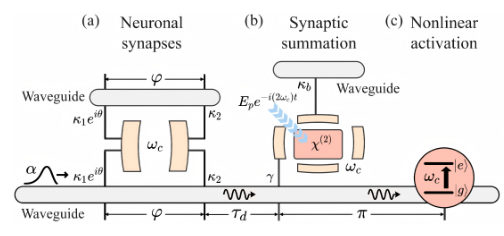
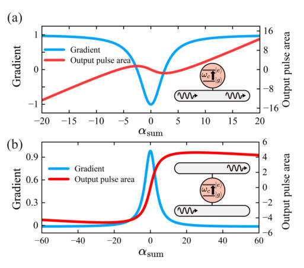
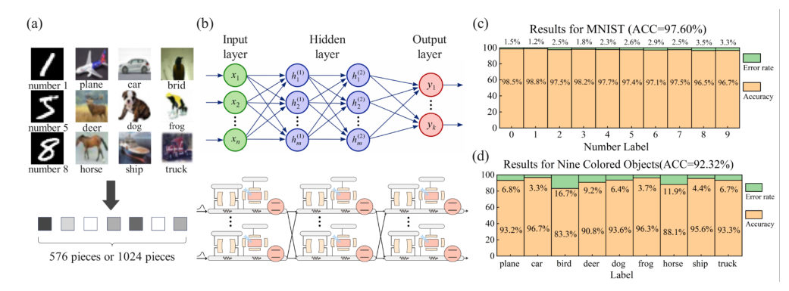
Summary. This paper proposes a new type of all-optical neural network that uses the transient quantum dynamics of light interacting with matter to perform computation. By using waveguide QED, the design avoids the need for slow electronic conversion for nonlinear activation, enabling much faster and more efficient optical computing. The proposed system shows high accuracy in recognizing complex patterns like MNIST digits.
Why it may be interesting. It demonstrates how transient light-matter dynamics and non-equilibrium quantum effects in waveguide QED can be harnessed as a native computational resource for high-dimensional nonlinear processing.
Main problem. Current optical neural networks are limited by steady-state operation and high-latency electro-optical conversion required for nonlinear activation.
Main result. The authors propose an all-optical architecture using coherent transient dynamics that achieves high classification accuracy (97.6% on MNIST) while eliminating the optoelectronic bottleneck.
Method. The study uses full-physics numerical simulations, the SLH formalism, input-output theory, and quantum Langevin equations to evaluate the network's performance.
Model / system. A waveguide QED system in the giant-atom regime consisting of a three-module architecture: a giant cavity for synaptic weighting, a bad-cavity integrator with a chi-2 nonlinear medium, and a two-level system for nonlinear activation.
Key observables. The complex-valued area of the output wavepacket, which defines the predicted class probabilities.
Important parameters / regimes. Bad-cavity regime, critical-gain regime (G approx gamma), giant-atom regime, and phase-tunable nonlocal interference.
Assumptions / limitations. Data is encoded as a time-ordered sequence of exponentially decaying wavepackets; training is performed via an in-situ strategy using a classical computer for parameter updates.
Figures summary. Figure 1 illustrates the physical implementation of the three modules (synaptic weighting, temporal integrator, and nonlinear activation). Figure 2 shows the resulting nonlinear activation function.
Paper structure. The paper introduces the bottleneck in ONNs, describes the proposed waveguide QED architecture and its physical modules, details the mathematical formalism and simulation methods, presents classification results and robustness tests, and concludes with the implications for neuromorphic computing.
Optical neural networks promise ultrafast, low-energy information processing by performing computation directly with photons. Current implementations, however, are largely restricted to steady-state operation and rely on high-latency electro-optical conversion for nonlinear activation. To address these limitations, we propose an all-optical fully connected neural network architecture in which the basic neuronal functions are realized by coherent transient quantum dynamics. Within this framework, phase-tunable nonlocal interference in a giant cavity implements programmable synaptic weights; an integrator operating in the bad cavity regime performs temporal summation by coherently combining sequential wavepackets; and transient Rabi dynamics of a driven two-level system provide nonlinear activation. Full-physics simulations demonstrate high classification accuracy on MNIST and colored-object recognition tasks. These results eliminate the optoelectronic activation bottleneck, reduce latency, and establish transient light-matter dynamics as a native physical resource for high-dimensional nonlinear information processing, paving the way toward fully optical neuromorphic computing.
Authors: Bob Osano
Type: theory · Category: statistical mechanics · PDF: https://arxiv.org/pdf/2605.18121v1
Analysis basis: full PDF text, analyzed in chunks
Topic relevance: Keldysh / 2PI / non-Gaussian methods 2/5 · entanglement & information structure 2/5
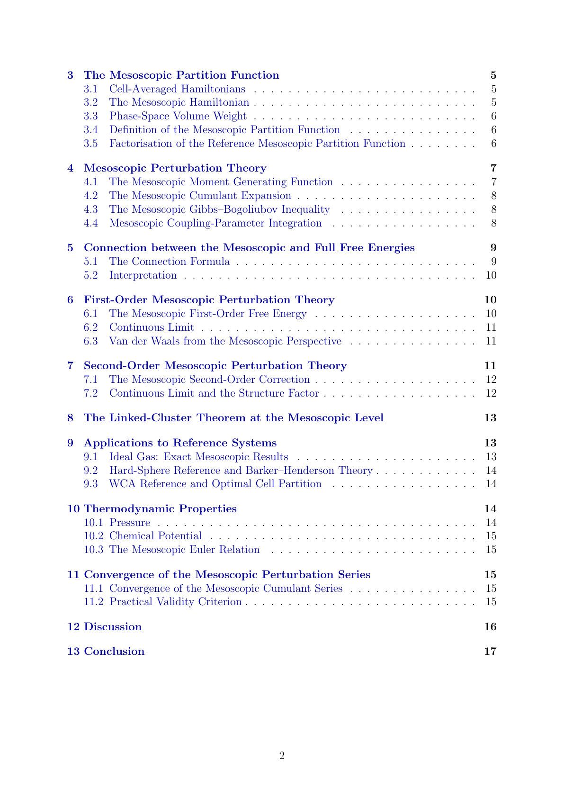
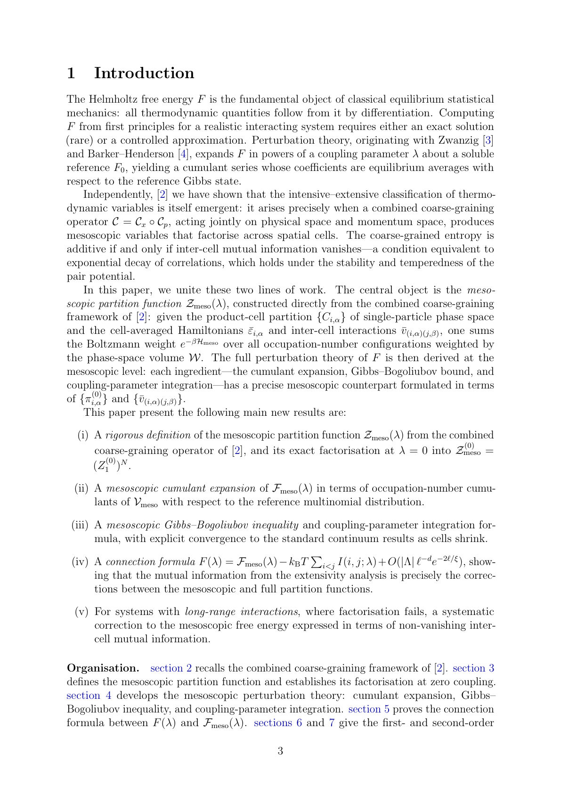
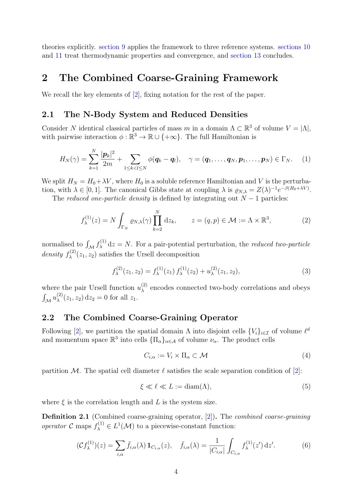
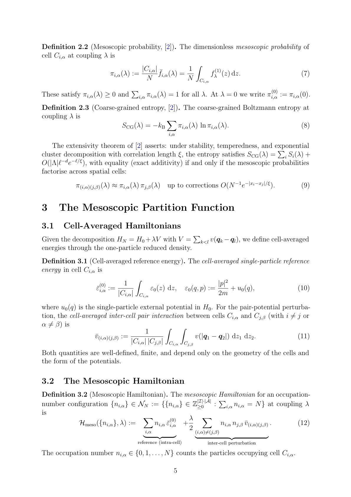
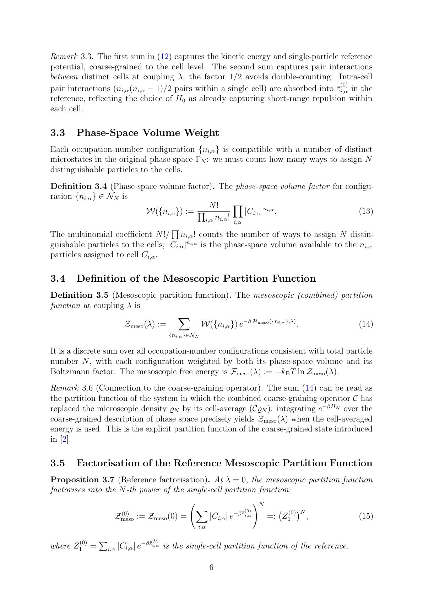
Summary. This paper presents a new way to calculate the free energy of classical systems by partitioning phase space into mesoscopic cells. It provides a mathematical bridge to correct for errors introduced by coarse-graining and shows how this framework recovers standard liquid state theories like van der Waals. It also identifies the WCA decomposition as the mathematically optimal way to split potentials in this framework.
Why it may be interesting. not directly relevant
Main problem. Developing a systematic perturbation theory for the Helmholtz free energy of a classical N-body system using a mesoscopic coarse-graining framework and quantifying the error introduced by cell-averaging.
Main result. The derivation of a connection formula relating the full free energy to the mesoscopic free energy via inter-cell mutual information corrections, and the proof that the WCA decomposition is the optimal split for minimizing mesoscopic variance.
Method. A mesoscopic cumulant expansion of the free energy based on a combined coarse-graining operator in phase space, utilizing multinomial statistics and the linked-cluster theorem.
Model / system. A classical N-body system of identical particles in a domain Lambda, described by a Hamiltonian consisting of a soluble reference part and a perturbative pair-potential.
Key observables. Helmholtz free energy, mesoscopic free energy, inter-cell mutual information, and reduced densities.
Important parameters / regimes. Cell diameter (l), correlation length (xi), particle density (rho), and temperature (T).
Assumptions / limitations. Scale separation (xi << l << L) and the use of tempered potentials to ensure extensivity.
Paper structure. The paper introduces the mesoscopic framework, develops the perturbation theory via cumulant expansion, establishes the connection formula to the full free energy, analyzes the continuous limit, and discusses the optimality of the WCA decomposition.
We develop a systematic perturbation theory for the Helmholtz free energy of a classical $N$-body system within the mesoscopic framework of~\cite{OsanoMeso,OsanoExtensivity}. The combined coarse-graining operator $\mathcal{C}=\mathcal{C}_x\circ\mathcal{C}_p$ acting on single-particle phase space partitions it into product cells $C_{i,α}=V_i\timesΠ_α$ and generates a mesoscopic partition function $\mathcal{Z}_{\rm meso}(λ)$ whose reference level factorises by the multinomial theorem: $\mathcal{Z}_{\rm meso}^{(0)}=(Z_1^{(0)})^N$. Perturbation theory for $\mathcal{F}_{\rm meso}(λ)=-k_BT\ln\mathcal{Z}_{\rm meso}(λ)$ in the inter-cell perturbation $\mathcal{V}_{\rm meso}$ yields the mesoscopic Gibbs--Bogoliubov inequality and an exact coupling-parameter integration formula. The full free energy satisfies \begin{equation} F(λ)=\mathcal{F}{\rm meso}(λ)-k_BT!\sum\right), \end{equation}I(i,j;λ)+O!\left(|Λ|\ell^{-d}e^{-2\ell/ξ} where the inter-cell mutual informations $I(i,j;λ)$ are the corrections identified in the extensivity analysis. The first-order theory recovers the van der Waals equation and the Barker--Henderson result; the second-order term converges to the structure-factor formula in the fine-cell limit. For long-range interactions, factorisation fails, and the mutual-information corrections quantify the resulting non-extensivity.
Authors: Bob Osano
Type: theory · Category: statistical mechanics · PDF: https://arxiv.org/pdf/2605.17956v1
Analysis basis: full PDF text, analyzed in chunks
Topic relevance: entanglement & information structure 2/5 · non-equilibrium dynamics 1/5
Summary. This paper derives thermodynamic extensivity from microscopic interaction properties rather than assuming it as a postulate. It shows that while short-range forces lead to additive entropy, long-range forces cause a breakdown of extensivity. The work also connects spatial averaging errors to the cosmological backreaction problem.
Why it may be interesting. not directly relevant
Main problem. The paper seeks to provide a constructive derivation of thermodynamic extensivity and entropy additivity from microscopic conditions, rather than treating them as postulates, while investigating the breakdown of these properties in long-range interacting systems.
Main result. The author proves that entropy additivity is achieved when correlations decay exponentially, with errors suppressed by the ratio of cell diameter to correlation length, and demonstrates that long-range interactions lead to non-additive entropy and non-extensivity.
Method. A coarse-grained operator approach using Ursell cluster expansion and mesoscopic probabilities over phase-space cells to analyze reduced densities.
Model / system. Classical N-body systems in a bounded domain, including ideal gases, short-range interacting gases (Yukawa-type potential), and long-range interacting gases (algebraic decay).
Key observables. Coarse-grained entropy (Scg), fine-grained Gibbs entropy, inter-cell mutual information, Jensen correction, and surface correction to the Euler relation.
Important parameters / regimes. Correlation length (xi), cell diameter (l), system size (L), temperature (T), and the decay exponent (s0) for long-range potentials.
Assumptions / limitations. Assumes microscopic stability, temperedness of the potential, and exponential cluster decomposition for the short-range case; assumes scale separation where xi << l << L.
Figures summary. Heatmaps of reduced density; visualization of mesoscopic probability grids; convergence of coarse-grained entropy to Gibbs entropy; plots showing entropy deviation and mutual information decay for different interaction ranges; and tests of extensivity via entropy per particle.
Paper structure. The paper introduces a coarse-graining operator, establishes the mathematical framework for mesoscopic probabilities, provides analytical proofs for entropy additivity and non-additivity, presents numerical simulations of different gas models, and concludes with the derivation of a generalized Euler relation.
Thermodynamic extensivity is commonly introduced as a postulate -- the homogeneity of degree one in thermodynamic potentials. We provide a constructive derivation of this property from microscopic conditions on the pair potential, without assuming it. Working with the one- and two-particle reduced densities of the $N$-body canonical Gibbs state, we introduce a combined coarse-graining operator $\mathcal{C}$ on single-particle phase space $\mathcal{M}=Λ\times\mathbb{R}^3$, producing dimensionless mesoscopic probabilities over spatial--momentum cells $\{V_i\timesΠ_α\}$. Under three conditions on the pair potential -- stability, temperedness, and exponential cluster decomposition with correlation length $ξ$ -- we show, using the Ursell cluster expansion, that the coarse-grained entropy satisfies \[S_{\mathrm{CG}}=\sum_i S_i+O\!\left(\frac{|Λ|}{\ell^d}e^{-\ell/ξ}\right),\] where $\ell\ggξ$ is the cell diameter. The correction is exponentially suppressed per cell, making entropy additive and recovering the thermodynamic limit of Ruelle and Fisher in explicit operator language. For systems with long-range interactions, where temperedness fails, the correction does not vanish, and non-additivity is quantified through inter-cell mutual information. We further show that spatial averaging does not commute with nonlinear thermodynamic functionals such as the entropy density -- a thermodynamic analogue of the cosmological averaging problem -- and we derive the generalised Euler relation with explicit surface corrections.
Authors: Javier Blanco-Romero, Florina Almenares Mendoza
Type: theory · Category: other · PDF: https://arxiv.org/pdf/2605.18640v1
Analysis basis: full PDF text, analyzed in chunks
Topic relevance: entanglement & information structure 2/5 · quantum measurements 1/5
Summary. This paper provides a quantitative limit on the Reeh-Schlieder theorem by showing that while any state can be prepared locally, states with negative modular energy impose an exponential cost on the required operator strength and measurement success probability. It establishes that local unitary dynamics cannot access the negative modular sector of a quantum field.
Why it may be interesting. not directly relevant
Main problem. Quantifying the operational cost, in terms of operator norm and postselection probability, required to prepare target states from the vacuum using local operators in Quantum Field Theory.
Main result. The authors derive a modular lower bound showing that preparing states with negative modular energy requires an exponential increase in operator norm and postselection overhead. They specifically show that local unitaries are restricted to states with non-negative modular energy.
Method. The study utilizes Algebraic Quantum Field Theory (AQFT) frameworks, specifically Tomita-Takesaki theory, to relate the norm of local operators to the expectation value of the modular Hamiltonian.
Model / system. The framework is based on local algebras (Type III factors) in Minkowski space, focusing on specific geometries such as Rindler wedges and causal diamonds in Conformal Field Theories (CFTs).
Key observables. Operator norm of the local operator, modular energy (expectation value of the modular Hamiltonian), and postselection success probability.
Important parameters / regimes. The regime of negative modular energy, the weight/lapse function in CFT balls, and the boost energy in Rindler wedges.
Assumptions / limitations. The explicit form of the modular Hamiltonian is assumed to be known for specific geometries (wedges and CFT balls); the results are derived within the context of von Neumann algebras.
Paper structure. The paper introduces the problem of quantifying Reeh-Schlieder costs, develops a model-independent bound using Tomita-Takesaki theory, applies this to specific geometric cases (wedges and CFTs), and concludes with the implications for local unitaries and postselection.
The Reeh-Schlieder theorem says that every target vector can be approximated from the vacuum by an operator localized in an arbitrarily small spacetime region, but it gives no quantitative cost for doing so. This note isolates a standard Tomita-Takesaki estimate as a model-independent preparation bound. Targets with deeply negative modular energy require large local operators. After rescaling such an operator to a physical contraction, the same estimate becomes a lower bound on postselection overhead. In geometries where the modular Hamiltonian is known, the bound becomes explicit. Bisognano-Wichmann turns it into a boost energy statement for wedges, and the Casini-Huerta-Myers formula gives a stress-tensor version for bounded regions of conformal field theories. Local unitaries can only reach states of nonnegative modular energy. Negative modular sectors require nonunitary or postselected outcomes, giving a preparation cost bound that complements vacuum embezzlement in type III local algebras.
Authors: Filippo Girardi, Nilanjana Datta, Giacomo De Palma, Ludovico Lami
Type: theory · Category: quantum information and computing · PDF: https://arxiv.org/pdf/2605.18726v1
Analysis basis: full PDF text, analyzed in chunks
Topic relevance: entanglement & information structure 2/5 · quantum measurements 1/5
Summary. This paper establishes a framework for performing quantum information tasks when the source or channel is not perfectly independent and identically distributed. It demonstrates that while fundamental limits like capacity are robust to small local perturbations, the error exponent can be highly sensitive to these deviations.
Why it may be interesting. not directly relevant
Main problem. Investigating the robustness of fundamental Quantum Shannon theory protocols (hypothesis testing, data compression, and channel coding) when the ideal i.i.d. assumption is replaced by 'almost i.i.d.' resources.
Main result. The authors prove that classical and quantum capacities and data compression rates are robust under Wasserstein-type almost i.i.d. perturbations, but the reliability function (error exponent) can fail and drop to zero.
Method. The study introduces the 'club distance' and uses the quantum Wasserstein distance of order 1 to classify different levels of almost i.i.d. structures and evaluate protocol stability.
Model / system. The paper considers sequences of quantum states (sources) and quantum channels that deviate from a perfect tensor product structure via local perturbations or correlations.
Key observables. Stein exponent, von Neumann entropy, Holevo quantity, channel capacity, and reliability function.
Important parameters / regimes. Asymptotic limit (n to infinity), smoothing parameter delta, and different convergence regimes (weak, Wasserstein, and MSR).
Assumptions / limitations. The study assumes finite-dimensional Hilbert spaces and focuses on the class of 'almost i.i.d.' resources rather than arbitrary non-i.i.d. processes.
Figures summary. Figure 1 provides a hierarchical diagram illustrating the nesting relationship between different notions of almost i.i.d. processes (Weakly, Wasserstein, MSR, and Trace distance).
Paper structure. The paper identifies the failure of standard metrics, introduces the quantum Wasserstein distance and club norm, establishes a hierarchy of almost i.i.d. sources, and then analyzes the robustness of specific information-theoretic tasks.
The asymptotic rates of information-theoretic protocols - including error exponents, compression rates, and channel capacities - are traditionally defined under the idealised assumption that the underlying resource (state or channel) is independent and identically distributed (i.i.d.). Somewhat surprisingly, even slight departures from the exact i.i.d. structure can lead to a drastic breakdown of these protocols. The asymptotic rates of information theoretic protocols - error exponents, compression rates, capacities - were originally evaluated taking for granted that the underlying source (state or channel) is i.i.d. Differently from what we might expect at first glance, it is not hard to exhibit instances of protocols that may drastically fail when the i.i.d. assumption holds only approximately rather than exactly. If the precise nature of the perturbation from the i.i.d. regime is known (e.g. a pointwise defect), we could design a bespoke protocol that compensates for the defect (for example, by discarding the corrupted subsystem). However, in any realistic setting, neither can the i.i.d. behaviour of the system be precisely guaranteed, nor can the deviations from the ideal regime be determined exactly. In this paper we answer the following question: are there protocols that can still achieve the optimal asymptotic rates when the i.i.d. resource is replaced by any arbitrary almost i.i.d. resource along it? What is the nature of the unknown perturbation under which protocols like these are possible? We focus, in particular, on hypothesis testing, data compression, and channel coding. As a by-product of our analysis, we introduce the notion of club distance, as a variant of the well-known diamond distance, and of an almost i.i.d. process, which may be of independent interest.
Authors: Jiaji Zhang, Lipeng Chen, Carlos L. Benavides-Riveros
Type: theory · Category: quantum information and computing · PDF: https://arxiv.org/pdf/2605.18569v1
Analysis basis: full PDF text, analyzed in chunks
Topic relevance: non-equilibrium dynamics 2/5 · entanglement & information structure 1/5

Summary. This paper introduces an RL-assisted method to find electronic excited states and simulate real-time dynamics on quantum computers. By using a reinforcement learning agent to pick the best operators, the method creates very efficient, short circuits that do not grow in complexity even as simulation time increases. It demonstrates high accuracy for small molecules like H2 and H3+.
Why it may be interesting. It presents a significant advancement in quantum algorithms by using RL to automate ansatz construction, specifically solving the scalability issue of circuit depth growth during real-time dynamics, which is crucial for simulating many-body dynamics.
Main problem. Efficiently computing electronic excited states and real-time quantum dynamics of many-fermion systems on near-term quantum devices while overcoming the unbounded growth of circuit depth and the complexity of multi-configurational states.
Main result. The RL-CQE algorithm successfully generalizes to excited states and time evolution, achieving chemical accuracy with highly compact ansätze (minimal operator counts) and a constant-scaling circuit depth for time evolution.
Method. A Reinforcement Learning Contracted Quantum Eigensolver (RL-CQE) using a Deep Q-Network (DQN) agent to adaptively select two-body operators based on ACSE residuals, utilizing a purified ensemble approach for excited states.
Model / system. Electronic systems, specifically the H2 and linear H3+ molecules, modeled with standard electronic Hamiltonians (one-electron and two-electron integrals) mapped to qubits via Jordan-Wigner transformation.
Key observables. Energy eigenvalues, ACSE residual norm, time-dependent fidelity, and potential energy curves.
Important parameters / regimes. Ensemble weight vectors, simulation time (t), bond lengths (0.5 to 3.0 Angstroms), and the number of unitary transformations (steps).
Assumptions / limitations. The use of a purified ensemble approach treats excited states as an effective ground-state problem on an enlarged Hilbert space; the algorithm assumes the availability of a one-particle basis.
Figures summary. Figure 1 shows potential energy curves for H2; Figure 2 displays the rapid drop of the ACSE residual norm; Figure 3 compares energy eigenvalues under different ensemble weight vectors; Figure 4 shows potential energy curves for H3+ and residual convergence.
Paper structure. The paper introduces the problem of excited-state/dynamic simulation, describes the RL-CQE framework and DQN architecture, details the implementation for time evolution and ensemble weighting, presents benchmarks on H2 and H3+, and concludes with discussion on scalability and limitations.
The computation of electronic excited states and real-time quantum dynamics of many-fermion systems is among the most promising applications of near-term quantum computing. In this work, we generalize the reinforcement learning contracted quantum eigensolver (RL-CQE), previously developed for ground-state problems, to electronic excited states and real-time quantum dynamics, in which a deep Q-network agent adaptively selects the two-body operators at each iteration, yielding more compact ansätze and improved robustness with respect to critical hyperparameters. A key feature of the algorithm is a scalable state representation based on the ACSE residuals, whose dimension grows with the one-particle basis but remains independent of the number of targeted excited states. We also verify the equivalence of sign-free qubit operators in the excited-state setting, extending a result previously established for ground-state problems. Our RL-CQE for time evolution derives from a constant-scaling ansatz that represents the wave function with a fixed number of unitary transformations independent of simulation time $t$, enabled by the shared unitary structure of the purified ensemble treatment of excited states. Benchmarks on chemical systems demonstrate chemical accuracy with minimal operator counts across a range of bond lengths.
Authors: Kaiming Bian, Zujin Wen, Oscar Dahlsten
Type: both · Category: quantum information and computing · PDF: https://arxiv.org/pdf/2605.16998v1
Analysis basis: full PDF text, analyzed in chunks
Topic relevance: quantum measurements 2/5
Summary. This paper introduces a shallow, O(n) alternative to the Quantum Fourier Transform using a new family of Hadamard-Phase circuits. By replacing the standard QFT with these circuits and using a neural network for classical post-processing, the authors demonstrate a hardware-efficient way to solve the Hidden Subgroup Problem and perform factorization.
Why it may be interesting. not directly relevant
Main problem. The high circuit depth of the standard Quantum Fourier Transform (O(n^2)) is a bottleneck for near-term quantum hardware. The goal is to find a shallower, O(n) alternative that remains compatible with Hidden Subgroup Problem (HSP) algorithms like Shor's algorithm.
Main result. The authors propose a family of shallow HP-L circuits that preserve shift invariance and retain exponentially growing Fisher information. When paired with a neural network for classical post-processing, these circuits can successfully perform period recovery and factorization.
Method. The authors use analytical proofs to establish shift-invariance conditions, numerical analysis of Discrete Fisher Information (DFI) to quantify information retention, and a Deep Sets neural network for classical decoding of measurement outcomes.
Model / system. The study focuses on n-qubit systems representing cyclic groups (Z_{2^n}). The circuit model consists of HP-L (Hadamard-Phase) circuits, specifically the depth-7 HP-1 architecture, which uses alternating layers of Hadamard and controlled-phase gates.
Key observables. Discrete Fisher Information (DFI), measurement probability distributions, and top-1/top-3 recovery accuracy.
Important parameters / regimes. Circuit depth scaling (O(n) vs O(n^2)), number of qubits (n), depolarizing noise strength (eta), and sample complexity (m).
Assumptions / limitations. The analysis is restricted to finite abelian groups; the noise model is limited to a global depolarizing channel; the neural network assumes a polynomial-scaling training regime.
Figures summary. Figure 1 illustrates the proposed HSP routine; Figure 2 shows the exponential growth of DFI for various HP configurations; Figure 3 shows neural network convergence and successful factorization of numbers up to 395; Figure 4 shows log-linear regression fits for the scaling of DFI.
Paper structure. The paper begins by identifying the need for shallow QFT alternatives, defines the mathematical requirements for shift-invariance, introduces the HP-L circuit family, provides analytical proofs for its properties, quantifies information retention via DFI, and concludes with numerical simulations of Shor's algorithm and noise robustness testing.
The Quantum Fourier Transform (QFT) is required by hidden subgroup problem (HSP) algorithms, including Shor's algorithm for factoring. The circuit depth of the QFT remains challenging for near-term hardware. To find shallower alternatives we identify two properties that are exploited by the QFT to enable HSP. Firstly, the shift invariance of the QFT allows for the removal of a random overall shift. Secondly, the QFT retains information about the hidden subgroup generator accessible in the measurement outcomes. We quantify that information via the discrete Fisher information. We construct a family of shallow circuits using Hadamards and controlled-Phase gates, HP-$L$ circuits, that we prove preserve shift invariance. Numerical analysis shows these circuits retain exponentially growing Fisher information. The $\mathcal{O}(n)$ HP-$1$ can replace the $\mathcal{O}(n^2)$ QFT in Shor's algorithm, as demonstrated numerically, with an efficient neural network implementing classical post-processing.
Authors: Luis Lozano
Type: both · Category: quantum information and computing · PDF: https://arxiv.org/pdf/2605.17628v1
Analysis basis: full PDF text, analyzed in chunks
Topic relevance: QC/QI experiment 2/5

Summary. The paper identifies that the quadratic penalty used to enforce constraints in quantum annealing is the primary cause of hardware embedding failure in portfolio optimization. By removing this penalty and handling constraints classically, the authors demonstrate a much more stable and efficient pipeline for using quantum annealers for financial tasks.
Why it may be interesting. not directly relevant
Main problem. Standard penalty-encoded QUBO formulations for portfolio optimization create dense, complete interaction graphs that cause massive chain-break rates and infeasible samples on sparse quantum annealer topologies.
Main result. A penalty-free pipeline that samples only the objective-only QUBO and enforces constraints classically reduces chain-break fractions from up to 92% to less than 0.04%, making direct QPU access viable.
Method. The authors propose a three-stage pipeline: topology-aware sparsification of the objective, hardware embedding on D-Wave processors, and classical greedy feasibility projection to recover the cardinality constraint.
Model / system. The study uses D-Wave quantum annealers (Pegasus and Zeander topologies) applied to two optimization domains: equity portfolio selection (using FF49 industry data) and sports betting (1X2 football outcomes).
Key observables. Chain-break fraction, chain length, qubit overhead ratio, objective regret, and financial metrics like realized Sharpe ratio and ROI.
Important parameters / regimes. Asset universe size (N up to 49), target cardinality (K), risk aversion (lambda), and penalty weight (A).
Assumptions / limitations. The study focuses on direct QPU access rather than hybrid solvers and does not claim quantum advantage, only improved operational viability at current scales.
Figures summary. Figures illustrate the penalty-dilution mechanism, the proposed three-stage pipeline, scaling of chain-breaks and chain lengths, and out-of-sample financial performance comparisons.
Paper structure. The paper identifies the structural cause of optimization failure, evaluates various sparsification and projection strategies, compares hardware topologies (Pegasus vs. Zephyr), and validates the pipeline using equity and betting datasets.
Direct quantum-annealer portfolio optimization is commonly formulated as a penalty-encoded QUBO and submitted to D-Wave hardware. We show that this standard formulation fails on current devices and identify the structural reason: the cardinality penalty contributes a dense rank-one term proportional to the all-ones matrix that makes the logical interaction graph complete regardless of the covariance structure. On Pegasus and Zephyr, chain-break fractions reach 83 percent at N equal to 24 and 92 percent at N equal to 49, producing no feasible samples. Attempting to fix this through topology-aware sparsification reveals a second problem: any sparsifier that removes off-diagonal entries also dilutes the cardinality constraint, so raw samples remain infeasible even when chains no longer break, and an ablation shows that for structurally favorable cases such as betting with settlement-graph priors the classical feasibility projector alone explains the result rather than the QPU. We propose dropping the penalty entirely: build an objective-only QUBO from the expected returns and the risk-scaled covariance, sample it on hardware, and enforce the cardinality constraint classically as a post-processing step. On D-Wave Advantage and Advantage2 for equities up to N equal to 49 and betting up to N equal to 48, mean chain-break fractions per sample averaged over reads drop from the range of 71 to 92 percent down to at most 0.04 percent. The QPU returns lower-energy feasible portfolios than the greedy heuristic on betting at N equal to 39 and 48, which is an energy comparison and not a proof of optimality, and the equity post-processed regret is at most 0.03 percent at all tested scales. These results establish that the penalty encoding, not the sparse hardware topology, is the binding constraint for direct QPU portfolio optimization at currently accessible scales.
Authors: Abhoy Kole, Majd Assaad, Till Schnittka, Rolf Drechsler
Type: theory · Category: quantum information and computing · PDF: https://arxiv.org/pdf/2605.18169v1
Analysis basis: full PDF text, analyzed in chunks
Topic relevance: quantum measurements 2/5
Summary. This paper proposes a method to decompose large multi-controlled Toffoli gates into Clifford+T gates more efficiently by using 4-input relative-phase gates and dynamic circuits. By leveraging intermediate measurements and conditional corrections, the researchers significantly reduce the T-depth of these gates, which is a critical bottleneck in fault-tolerant quantum computing.
Why it may be interesting. not directly relevant
Main problem. Efficiently decomposing large multi-controlled Toffoli gates into the Clifford+T gate set while minimizing T-count, T-depth, and CNOT overhead in fault-tolerant architectures.
Main result. The authors demonstrate that using 4-input relative-phase Toffoli gates and dynamic circuit techniques (measurement-conditioned corrections) significantly reduces T-depth, achieving up to a 41.74% reduction for large gates without increasing T-count or CX-count.
Method. The study utilizes 3- and 4-input relative-phase Toffoli gates combined with dynamic circuit techniques, such as intermediate measurements, qubit resets, and measurement-conditioned feed-forward operations to replace costly uncomputation.
Model / system. The work focuses on fault-tolerant quantum computing architectures using the Clifford+T universal gate set, specifically targeting the implementation of multi-controlled X gates ($C_n X$).
Key observables. T-count, T-depth, and CX-count (CNOT gate count).
Important parameters / regimes. Number of control qubits ($n$), availability of a single clean ancilla, and the use of conditionally clean ancillas.
Assumptions / limitations. The analysis assumes the availability of at least one clean ancilla and the ability to perform intermediate measurements and classical feed-forward (dynamic circuits).
Figures summary. Figure 1 shows Clifford+T decompositions for relative-phase gates; Figure 2 compares different 5-input Toffoli realizations; Figures 3 and 4 illustrate dynamic implementations using measurement-conditioned operations; Figures 5-7 demonstrate large-scale gate realizations and T-depth reduction via parallelization.
Paper structure. The paper introduces the problem of multi-controlled Toffoli decomposition, presents new decomposition techniques using 3- and 4-input relative-phase gates, details the implementation of dynamic circuit techniques for uncomputation, provides a comparative analysis of resource bounds, and validates results through experimental/numerical evaluation.
Multi-controlled Toffoli gates are fundamental building blocks in quantum computation, with applications in quantum arithmetic, simulation, and search algorithms. In fault-tolerant architectures, their realization is constrained by the high cost of non-Clifford resources, particularly in terms of T-count and T-depth. Recent advances have demonstrated that the use of ancillary qubits, relative-phase Toffoli gates, and dynamic circuit techniques can substantially reduce this overhead. In this work, we investigate the decomposition of large Toffoli gates using 3- and 4-input relative-phase Toffoli gates in the presence of a single clean ancilla and conditionally clean ancillas. We derive explicit resource bounds for Clifford+T implementations incorporating dynamic-circuit-based uncomputation and measurement-conditioned corrections. Our analysis emphasizes T-depth reduction under fixed CX and T-count overhead, ensuring relevance for near-term devices. We show that introducing 4-input relative-phase Toffoli gates enables significant T-depth reductions through enhanced parallelism while maintaining favorable ancilla requirements. We further validate our theoretical results through experimental evaluation and comparative analysis with existing approaches.
← Index · ← Previous · Next →